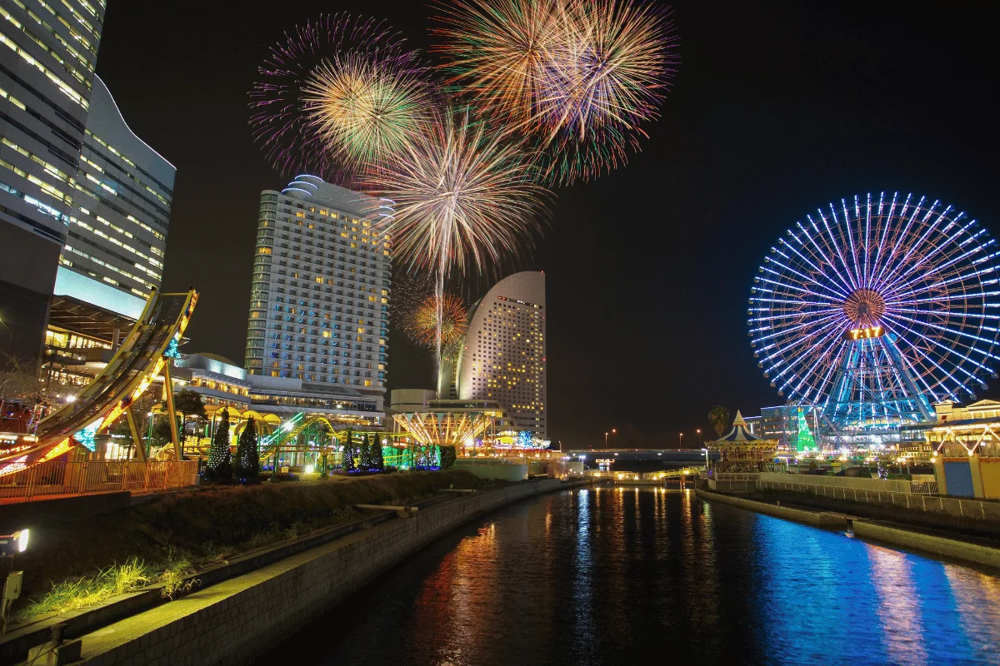

O termo Matsuri (祭り) significa "festival" ou "feriado" em japonês. Embora existam eventos seculares, a maioria tem raízes profundas no Xintoísmo e no Budismo, servindo originalmente como rituais para honrar divindades (kami), ancestrais ou celebrar as colheitas.
Principais Características
Exemplos Famosos no Japão
Matsuri no Brasil
Devido à grande comunidade japonesa, o Brasil sedia festivais importantes, como o Festival do Japão em
São Paulo e diversas edições locais do Bon Odori e Tanabata Matsuri.
Matsuri no Brasil
Devido à grande comunidade japonesa, o Brasil sedia festivais importantes, como o festival do Japão em
São Paulo e diversas edições locais do Bon Odori e Tanabata Matsuri.

O Hanabi Taikai (花火大会), ou festival de fogos de artifício, é uma das tradições mais icônicas do verão japonês. A palavra hanabi significa literalmente "flores de fogo" (hana 花 = flor; bi 火 = fogo).
Originalmente, esses festivais tinham o propósito espiritual de espantar maus espíritos e homenagear as almas dos falecidos por fome ou epidemias, tradição que se fortaleceu em 1733 com o xogum Tokugawa Yoshimune no Rio Sumida.
Principais Festivais de 2026
Os eventos geralmente ocorrem em julho e agosto. Alguns dos mais famosos incluem:
Dicas para participar Yukata: É comum vestir esse quimono leve de verão para entrar no clima festivo. Chegada Antecipada: Para garantir bons lugares (muitas vezes em lonas de piquenique), os locais chegam horas antes. Comida de Rua: Os festivais são acompanhados por barracas (yatai) que vendem iguarias como yakisoba, takoyaki e choco-banana.

Veja os gastos reais com aluguel, alimentação e contas no Japão.
Ver conteúdo completo →Veja também: